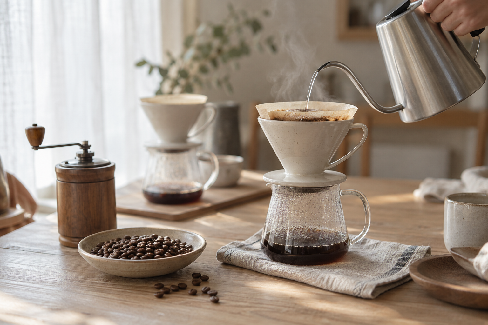
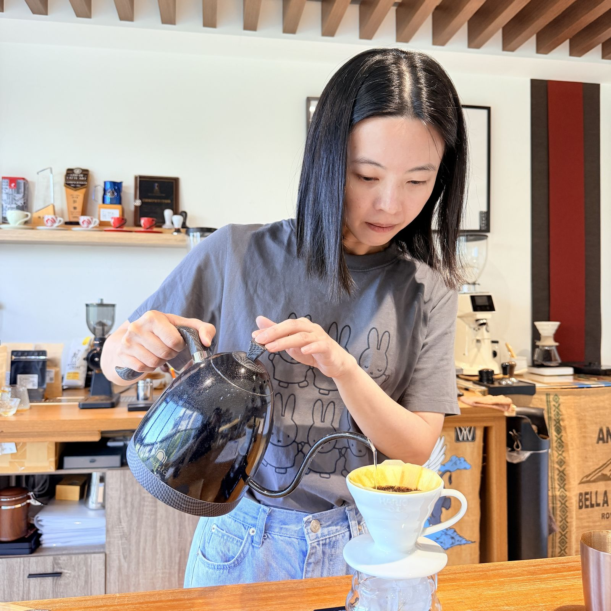
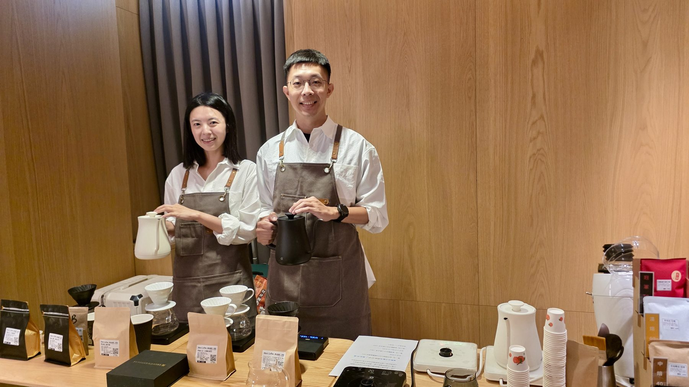

選擇首頁配色
露露咖啡日記｜手沖教學・熟豆選購
跟阿勳、露露親手練習。課堂使用的豆款，也能買回家繼續沖。
四小時新手課 · NT$1,800／人


01 / 手沖課程

兩位老師親自帶練。從第一杯，到回家自己沖。
林口／樹林／土城零經驗可參加，一人也可開班。
02 / 課堂熟豆
上完課，想買同款豆子回家練習？這裡就是我們課堂會用到的熟豆。
課後的練習，從同一包豆開始
在課堂認識風味，在家用同款豆練習。熟豆菜單每月更新，依當月供應調整。
五款選品 · 250g / 500g
挑除瑕疵豆 · 每月更新菜單
5 款精選咖啡
正在載入咖啡選品…
這次沒有找到符合的精選咖啡。
目前為五款示範選品，真實商品資料將陸續更新。
03 / 配送與聯絡
台灣本島超商取貨付款，滿 NT$1,000 免運。
7-11／全家店到店，台灣本島取貨付款。訂單與門市確認後兩天內出貨，未滿千元依實際運費計收。
品項不符、包裝破損或退換貨申請，請來信 mmulight@gmail.com。
透過露露咖啡日記 LINE，詢問開課日期、人數與咖啡豆。
搜尋首頁精選咖啡的產區、名稱或風味。